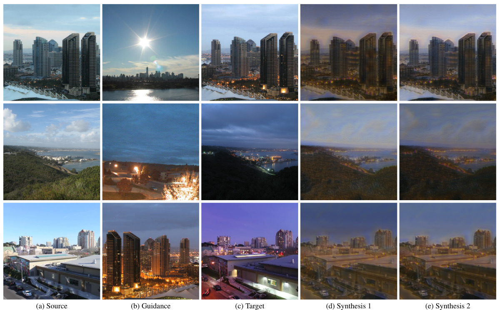
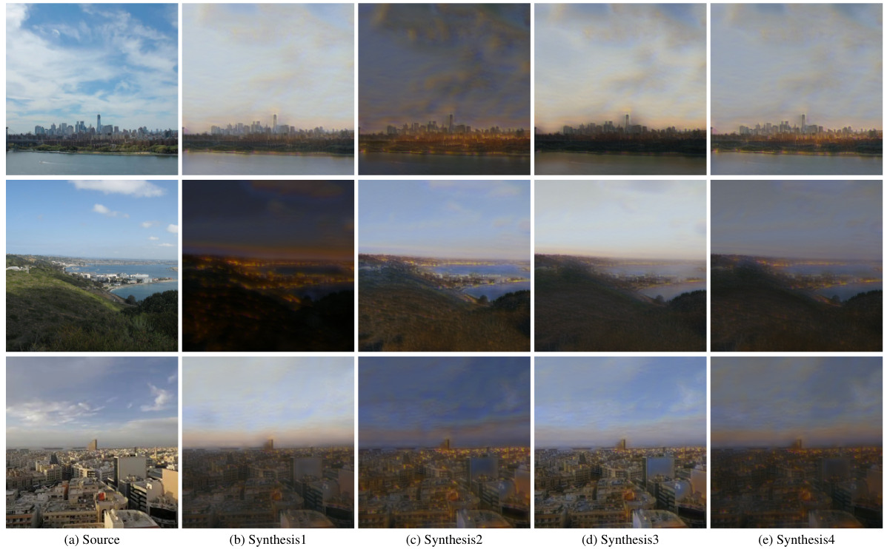

Unifying Guided and Unguided Synthesis for Outdoor Image Synthesis NTIRE Workshop at CVPR 2021
- University of Kentucky
Guided Synthesis Results
Unguided Synthesis Results
Abstract
Given a source image, our goal is to synthesize novel images of the same scene under different conditions, which could include changes in the time of day, season, or weather conditions. We consider two variants, unguided and guided synthesis, both of which require a way to generate diverse output images that cover the range of possible conditions. For the former task, the layout of the output image should match the source image and the conditions should appear realistic. For the latter task, the conditions should match those of a provided auxiliary guidance image. We address both tasks simultaneously using a probabilistic formulation, with separate distributions for each task, and use an end-to-end training method. We draw samples from these distributions to synthesize plausible images of the source scene. We prepare a new large-scale dataset and propose three benchmark tasks.